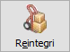
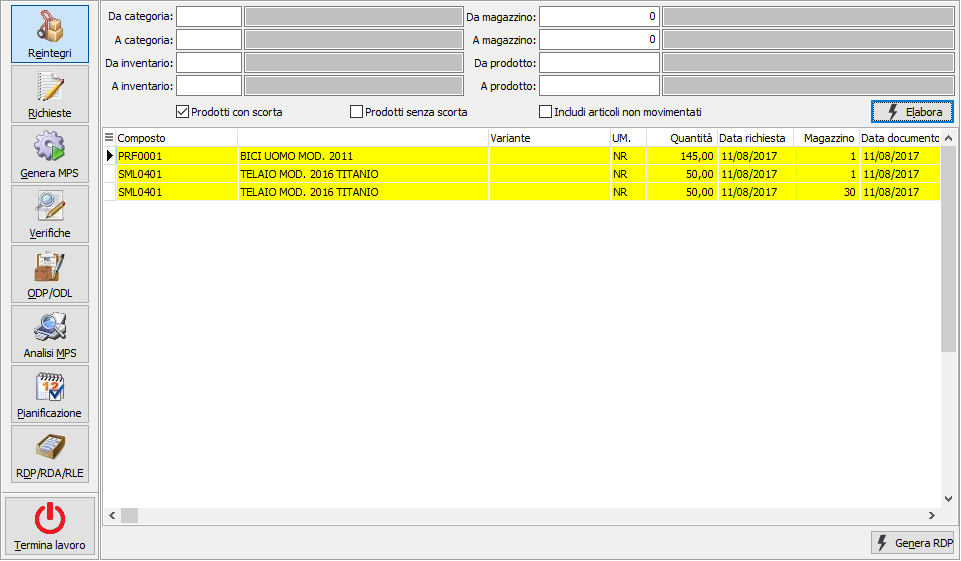
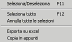

Reintegri

Questa funzionalità consente di generare RDP dall'analisi delle scorte eseguita sulla base dei criteri di selezione presenti nella sezione superiore della finestra; oltre i limiti di selezione è possibile specificare l'analisi dei prodotti con scorta, senza scorta ed includere gli articoli non movimentati spuntando le relative caselle. La pressione sul pulsante Elabora dà inizio all'elaborazione, gli articoli che risultano sottoscorta (in base al tipo di gestione scorte attivo) danno origine ad una proposta di RDP sul magazzino che risulta sottoscorta con data di produzione impostata come data odierna.

Le RDP proposte dal sistema possono essere selezionate/deselezionate, manualmente o tramite il menù del pulsante destro del mouse sulla griglia o tramite i tasti funzione, per essere confermate; premendo il pulsante Genera RDP saranno generate le RDP relative alle righe selezionate. Al momento della generazione eventuali RDP di reintegro già presenti che non hanno ancora generato ODP o che abbiano generato ODP provvisori saranno eliminate. La generazione delle RDP invalida il piano di produzione attuale che dovrà essere rigenerato.Le RDP derivanti da sottoscorta non vengono nettificate.
La generazione delle RDP di reintegro scorta non è obbligatoria in quanto è possibile (spuntando l’opzione “Reintegro automatico scorta PF in generazione piano” presente in configurazione) reintegrare la scorta direttamente in fase di generazione del piano.